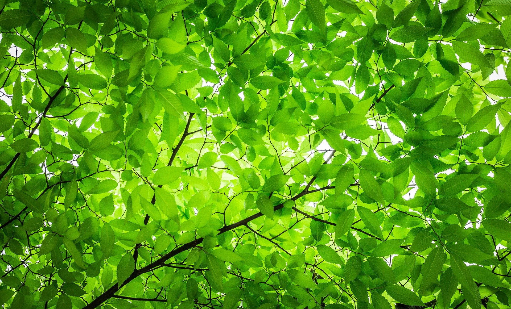

Nos dernières Actualités
Tout était prêt...
Nous n’attendions plus que vous ! En raison du contexte sanitaire actuel, notre festival éco-responsable Green Intermezzo qui devait se tenir à Bordeaux les 15 16 et 17 mai 2020, au jardin de la Croix du Sud pour les petits et pour tous au jardin des Barrières, ne pourra pas avoir lieu cette année. Pourtant, réjouissez-vous, Green Intermezzo vous retrouvera avec d’autant plus de plaisir lors de son festival 2021 !😄💚

Découvrez notre dernière édition du festival

Les bénévoles de Green Intermezzo réalisent chaque année, au printemps, dans
les parcs du quartier, un festival écoresponsable et intergénérationnel.
Cette manifestation d’éthique écologique a aussi un objectif, favoriser les échanges dans une ambiance familiale et conviviale.
À l’origine l’association Green Intermezzo a été créé à l’initiative de quelques conseillers culture de la commission du quartier Nansouty St Genès à Bordeaux.
Les bénévoles de Green Intermezzo réalisent chaque année, au printemps, dans
les parcs du quartier, un festival écoresponsable et intergénérationnel.
Cette manifestation d’éthique écologique a aussi un objectif, favoriser les échanges dans une ambiance familiale et conviviale.
À l’origine l’association Green Intermezzo a été créé à l’initiative de quelques conseillers culture de la commission du quartier Nansouty St Genès à Bordeaux.
À l’origine du Festival Green Intermezzo, un groupe d’amis, tous conseillers de la commission permanente du quartier Nansouty -St Genès à Bordeaux.
Dans le cadre de leur mandat, Barbara, Christel, Louis, Jean et Marie Hélène, tous concernés par l’écologie, ont décidé de créer un festival écoresponsable et intergénérationnel qui mêlerait divertissements et éveil des consciences.
Ils l’ont baptisé Green Intermezzo.
En 2019, après le succès de la 1ère édition du festival, ils ont fondé une association pour pérenniser cette manifestation qui se tiendra chaque année à Bordeaux durant un week-end, à la fin du printemps, dans les jardins du quartier Nansouty-St Genès.
Les bénévoles de Green Intermezzo réalisent chaque année, au printemps, dans
les parcs du quartier, un festival écoresponsable et intergénérationnel.
Cette manifestation d’éthique écologique a aussi un objectif, favoriser les échanges dans une ambiance familiale et conviviale.
À l’origine l’association Green Intermezzo a été créé à l’initiative de quelques conseillers culture de la commission du quartier Nansouty St Genès à Bordeaux.